Built-in Widgets
himena provides himena_builtins plugin package for the most basic widgets for the
widely-used data types.
Note
The detailed description of the widgets are available by running the "what is this widget?" command in the window menu.
Text Editor Widget
A text widget is simply used to display and edit a text data. Optionally, you can specify the language of the text data to enable syntax highlighting.
| Specification | |
|---|---|
| widget class | himena_builtins.qt.widgets.QTextEdit |
| model type | "text" (StandardType.TEXT) |
| data type | str |
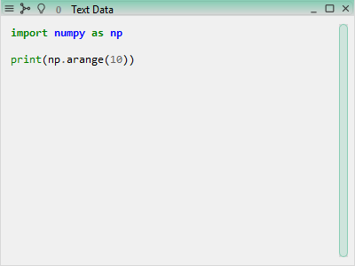
from himena.standards.model_meta import TextMeta
ui.add_object(
"import numpy as np\n\nprint(np.arange(10))",
type="text",
title="Text Data",
metadata=TextMeta(language="python")
)
Spreadsheet Widget
A spreadsheet widget is used to display and edit a table data. All the items are stored as strings, so that numerical operations on this widget are not very efficient.
| Specification | |
|---|---|
| widget class | himena_builtins.qt.widgets.QSpreadsheet |
| model type | "table" (StandardType.TABLE) |
| data type | ndarray of string dtype |
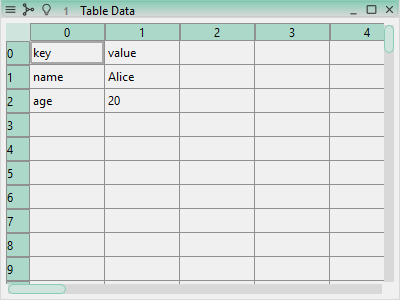
ui.add_object(
[["key", "value"], ["name", "Alice"], ["age", 20]],
type="table",
title="Table Data"
)
DataFrame Viewer Widget
A dataframe viewer widget is used to display a dataframe-like object. Unlike a spreadsheet widget, the underlying data is structured and typed.
| Specification | |
|---|---|
| widget class | himena_builtins.qt.widgets.QDataFrameView |
| model type | "dataframe" (StandardType.DATAFRAME) |
| data type | dataframe-like object, such as dict[str, list], pandas.DataFrame, polars.DataFrame |

ui.add_object(
{
"kind": ["cat", "dog", "cat", "dog", "cat", "dog", "cat", "dog"],
"size": ["small", "small", "large", "large", "small", "small", "large", "large"],
"weight": [8, 10, 12, 15, 11, 13, 9, 14],
},
type="dataframe",
title="DataFrame Data",
)
DataFrame Plot Widget
A dataframe plot widget contains a dataframe-like object just like a dataframe viewer, but the data is supposed to be plotted. Therefore, non-numerical columns are not allowed.
| Specification | |
|---|---|
| widget class | himena_builtins.qt.widgets.QDataFramePlotView |
| model type | "dataframe.plot" (StandardType.DATAFRAME_PLOT) |
| data type | dataframe-like object, such as dict[str, list], pandas.DataFrame, polars.DataFrame |
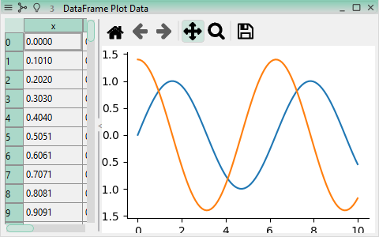
import numpy as np
x = np.linspace(0, 10, 100)
ui.add_object(
{
"x": x,
"y1": np.sin(x),
"y2": np.cos(x) * 1.4,
},
type="dataframe.plot",
title="DataFrame Plot Data",
)
Array Viewer Widget
This widget is used to display a multi-dimensional array-like object.
| Specification | |
|---|---|
| widget class | himena_builtins.qt.widgets.QArrayView |
| model type | "array" (StandardType.ARRAY) |
| data type | array-like object, such as numpy.ndarray, xarray.DataArray, dask.Array |
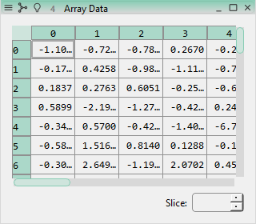
import numpy as np
rng = np.random.default_rng(10)
ui.add_object(
rng.normal(size=(3, 40, 18)),
type="array",
title="Array Data",
)
Image Viewer Widget
This widget is for displaying a multi-dimensional image data. Its design is inspired by ImageJ.
2D image slices are displayed in the main view, and the current slice can be changed by the slider. This widget also supports drawing ROIs (Region of Interests) on the image. RGB, complex value and multi-channel images are also supported.
| Specification | |
|---|---|
| widget class | himena_builtins.qt.widgets.QImageView |
| model type | "array.image" (StandardType.IMAGE) |
| data type | array-like object, such as numpy.ndarray, xarray.DataArray, dask.Array |
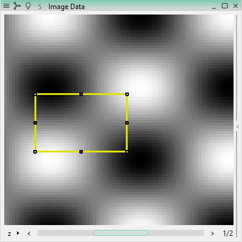
import numpy as np
from himena.standards.model_meta import ImageMeta
from himena.standards import roi
yy, xx = np.indices((100, 100))
image_stack = []
for n in range(3):
image_stack.append(np.sin(xx / 10 * n) * np.cos(yy / 8))
image = np.stack(image_stack, axis=0)
ui.add_object(
image,
type="array.image",
metadata=ImageMeta(
current_roi=roi.RectangleRoi(x=11, y=28, width=32, height=20),
axes=["z", "y", "x"],
),
title="Image Data",
)
Plot Widget
himena_builtins provides two types of plot widgets. One is based on the standard plot
model defined in himena.standards.plotting, and the other is a direct display of
matplotlib.Figure object.
The standard plot model is designed to be inter-changeable between different plotting
libraries, and himena can understand the underlying structure. Therefore, the plotted
data can be read, modified and written consistently. On the other hand, the matplotlib
figure object supports the complete set of matplotlib functions.
| Specification | |
|---|---|
| widget class | himena_builtins.qt.widgets.QModelMatplotlibCanvas |
| model type | "plot" (StandardType.PLOT) |
| data type | the standard plot model defined in himena.standards.plotting |
| Specification | |
|---|---|
| widget class | himena_builtins.qt.widgets.QMatplotlibCanvas |
| model type | "matplotlib-figure" (StandardType.MPL_FIGURE) |
| data type | matplotlib.Figure object |
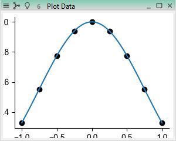
from himena.standards import plotting as hplt
import numpy as np
fig = hplt.figure()
x = np.linspace(-1, 1, 100)
fig.plot(x, np.cos(x) * np.exp(-x**2 / 2))
xsparse = np.linspace(-1, 1, 9)
fig.scatter(xsparse, np.cos(xsparse) * np.exp(-xsparse**2 / 2), color="black")
ui.add_object(fig, type="plot", title="Plot Data")
Excel-like Widget
This widget is used to display and edit a dictionary of tables, which is technically an Excel-like data. The keys of the dictionary are the names of the sheets.
| Specification | |
|---|---|
| widget class | himena_builtins.qt.widgets.QExcelEdit |
| model type | "dict.table" (StandardType.EXCEL) |
| data type | dict[str, ndarray] |
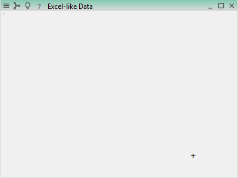
ui.add_object(
{
"format": [["key", "value"], ["name", ""], ["age", ""]],
"example": [["key", "value"], ["name", "Alice"], ["age", 20]],
},
type="dict.table",
title="Excel-like Data",
)
Function Widget
This widget contains a non-editable function object. A function widget is usually
created by the "Compile as a function" command on a text data. A function widget is
useful to be used as callable inputs for custom commands, such as scipy.optimization
or scipy.integrate.
| Specification | |
|---|---|
| widget class | himena_builtins.qt.widgets.QFunctionEdit |
| model type | "function" (StandardType.FUNCTION) |
| data type | callable object |
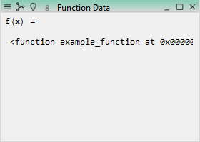
from himena.standards.model_meta import FunctionMeta
def example_function(x):
return x**2
ui.add_object(
example_function,
type="function",
title="Function Data",
)
ROI Widget
This widget represents a list of ROIs (Region of Interests). ROIs are usually used in images, and the built-in image viewer supports drawing ROIs on the image.
| Specification | |
|---|---|
| widget class | himena_builtins.qt.widgets.QImageRoiView |
| model type | "rois" (StandardType.ROIS) |
| data type | standard roi-list model in himena.standards.roi |
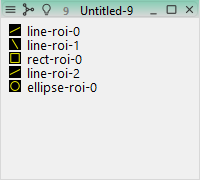
from himena.standards import roi
roilist = roi.RoiListModel(
items=[
roi.LineRoi(start=(4, 6), end=(18, -1), name="line-roi-0"),
roi.LineRoi(start=(12, 14), end=(6, 4), name="line-roi-1"),
roi.RectangleRoi(x=6, y=7, width=8, height=8.4, name="rect-roi-0"),
roi.LineRoi(start=(4, 6), end=(18, -1), name="line-roi-2"),
roi.EllipseRoi(x=6, y=7, width=8, height=8.4, name="ellipse-roi-0")
]
)
win = ui.add_object(roilist, type="rois")
win.size = (200, 180)
Jupyter Notebook Widget
Text contents in "ipynb" format can be rendered in a way similar to Jupyter Notebook.
| Specification | |
|---|---|
| widget class | himena_builtins.qt.widgets.QIpynbEdit |
| model type | "text.json.ipynb" (StandardType.IPYNB) |
| data type | str in the IPython Notebook format |
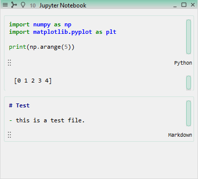
text = r"""{
"cells": [
{
"cell_type": "code",
"outputs": [{"name": "stdout", "output_type": "stream", "text": ["[0 1 2 3 4]\n"]}],
"source": ["import numpy as np\n", "import matplotlib.pyplot as plt\n", "\n", "print(np.arange(5))"]
},
{
"cell_type": "markdown",
"source": ["# Test\n", "\n", "- this is a test file."]
}
]
}"""
ui.add_object(text, type="text.json.ipynb", title="Jupyter Notebook")
Model Stack Widget
This widget is used for displaying a folder. Data is lazily loaded so that opening a large folder does not take much time.
| Specification | |
|---|---|
| widget class | himena_builtins.qt.widgets.QModelStack |
| model type | "models" (StandardType.MODELS) |
| data type | list[WidgetDataModel] |
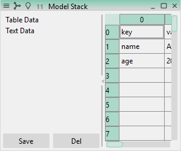
from himena.types import WidgetDataModel
models = [
WidgetDataModel(value=[["key", "value"], ["name", "Alice"], ["age", 20]], type="table", title="Table Data"),
WidgetDataModel(value="", type="text", title="Text Data"),
]
win = ui.add_object(models, type="models", title="Model Stack")
win.size = (300, 250)
Workflow Viewer Widget
The workflow of each data can be visualized in this widget.
| Specification | |
|---|---|
| widget class | himena_builtins.qt.widgets.QWorkflowView |
| model type | "workflow" (StandardType.WORKFLOW) |
| data type | himena.workflows.Workflow object |
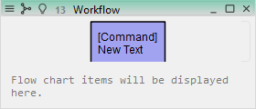
ui.exec_action("builtins:new-text")
win = ui.add_object(ui.current_model.workflow, type="workflow", title="Workflow")
win.size = (280, 120)